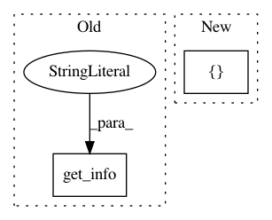

a3c190c9593b16434d87e43e99d2c838891d70ed,scipy/special/setup.py,,configuration,#Any#Any#,16
Before Change
config.add_extension("lambertw",
sources=["lambertw.c"],
define_macros=[],
extra_info=get_info("npymath"))
// Extension _logit
config.add_extension("_logit",
After Change
libraries=["sc_amos","sc_toms","sc_c_misc","sc_cephes","sc_mach",
"sc_cdf", "sc_specfun"],
sources=["_ufuncs.c", "_logit.c.src"],
include_dirs=[curdir],
extra_info=get_info("npymath"))
config.add_data_files("tests/*.py")
In pattern: SUPERPATTERN
Frequency: 3
Non-data size: 2
Instances
Project Name: scipy/scipy
Commit Name: a3c190c9593b16434d87e43e99d2c838891d70ed
Time: 2012-10-06
Author: pav@iki.fi
File Name: scipy/special/setup.py
Class Name:
Method Name: configuration
Project Name: scipy/scipy
Commit Name: 551c0158dc482066ef9a566a4a6cdb58796b39ce
Time: 2006-11-07
Author: robert.kern@gmail.com
File Name: Lib/sandbox/odr/setup.py
Class Name:
Method Name: configuration
Project Name: scipy/scipy
Commit Name: f7d35c59de44cda5dad4cab3aabc098633b9374e
Time: 2014-09-09
Author: cjk34@cam.ac.uk
File Name: scipy/integrate/setup.py
Class Name:
Method Name: configuration